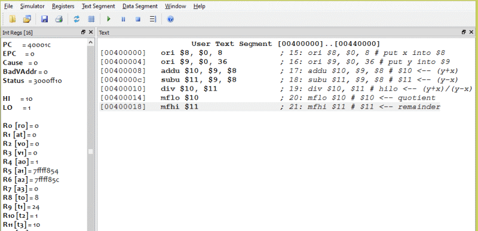

(36+8) / (36-8) = 1 Remainder 16, or 0x1 Remainder 0x10
Here is an example run of the program:
As usual, a stunning success.
Here is the 16-bit two's complement representation for -16.
1111 1111 1111 0000
Perform a logical shift right by two positions. Is the resulting pattern the correct representation for -16/4?